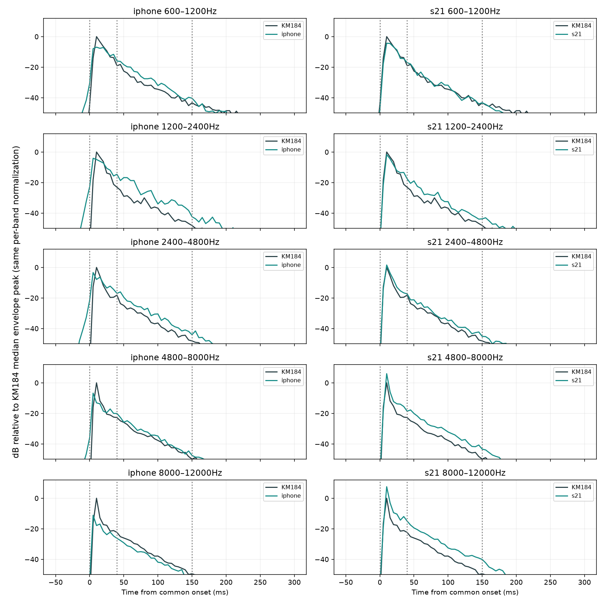

iPhone과 S21: 같은 시간별 보정이 왜 다르게 느껴질까?
기기별 원인을 확정하지 않고 어택·본체·좁은 성분 대비를 분리했습니다. 10월의 이미 확인한13타격, 현재 공통1/12 EQ와 기존 퍼커션 클립 기준 게인을 유지했습니다. 이번에는 새 보정 필터를 추가하지 않았습니다.
iPhone
1.2–2.4kHz의 어택은 중앙값 −0.11dB지만 본체는 ＋7.39dB입니다. 2.4–4.8kHz도 어택 −1.70dB / 본체 ＋6.19dB로, 같은 대역에서 단계에 따라 필요한 보정이 달라집니다. 고역 어택은 오히려 부족합니다.
이번 시간별 후보는85ms 분석창·60ms 평활화·±6dB 제한입니다. 이 조건이 빠른 초기 변화와 큰 본체 잔차를 모두 따라가지 못할 가능성이 있습니다. 이것은 잔향이 원인이라는 판정이 아닙니다.
S21
8–12kHz는 어택 ＋8.34dB, 본체 ＋7.45dB로 과다가 반복됩니다. 1.2–2.4kHz는 어택 −0.57dB / 본체 ＋5.02dB로 단계 차이도 있습니다.
참조 시간별 보정의 청감 이득은 사용자 관찰로 기록했습니다. 그러나 입력 특징만 사용하는 첫 단순 예측기는 고정 보정량보다 못해, 아직 자동 제어가 가능하다고 결론내리지는 않습니다.
1. 단계별 잔차가 같은 방향인가?
기기−KM184: ＋강함 / −약함.13타격의 관측 가능한 잔차 중앙값입니다. 작은 글씨는 유효 타격 수와 부호 개수입니다. 단계별 원본 양쪽SNR≥10dB가 필요합니다. 단순 전체 에너지 비율이 아니라 같은 대역의 초기·본체·감쇠 크기를 따로 비교합니다.
| 기기 | 대역 | 어택0–40ms | 본체40–150ms | 감쇠150–300ms |
|---|
| IPHONE | 600–1200Hz | -2.61dB
13/13 · ＋2 / −11 | +3.81dB
13/13 · ＋12 / −1 | +0.93dB
12/13 · ＋9 / −3 |
| IPHONE | 1200–2400Hz | -0.11dB
13/13 · ＋5 / −8 | +7.39dB
13/13 · ＋13 / −0 | +7.58dB
12/13 · ＋12 / −0 |
| IPHONE | 2400–4800Hz | -1.70dB
13/13 · ＋2 / −11 | +6.19dB
13/13 · ＋12 / −1 | +5.25dB
7/13 · ＋7 / −0 |
| IPHONE | 4800–8000Hz | -5.05dB
13/13 · ＋0 / −13 | +2.37dB
13/13 · ＋12 / −1 | +2.52dB
7/13 · ＋7 / −0 |
| IPHONE | 8000–12000Hz | -7.73dB
13/13 · ＋0 / −13 | -1.47dB
13/13 · ＋0 / −13 | -1.35dB
2/13 · ＋0 / −2 |
| S21 | 600–1200Hz | -0.98dB
13/13 · ＋1 / −12 | +1.57dB
13/13 · ＋11 / −2 | -0.87dB
7/13 · ＋3 / −4 |
| S21 | 1200–2400Hz | -0.57dB
13/13 · ＋5 / −8 | +5.02dB
13/13 · ＋13 / −0 | +5.08dB
8/13 · ＋8 / −0 |
| S21 | 2400–4800Hz | +0.15dB
13/13 · ＋8 / −5 | +3.09dB
13/13 · ＋13 / −0 | +3.45dB
3/13 · ＋3 / −0 |
| S21 | 4800–8000Hz | +4.09dB
13/13 · ＋12 / −1 | +5.73dB
13/13 · ＋13 / −0 | +5.57dB
2/13 · ＋2 / −0 |
| S21 | 8000–12000Hz | +8.34dB
13/13 · ＋13 / −0 | +7.45dB
13/13 · ＋13 / −0 | 미관측 |

그래프는 각 대역의 KM184 중앙 엔벌로프 피크를0dB로 놓고 두 기기에 같은 기준을 사용합니다. 기기별로 피크를 다시 맞추지 않았습니다. 공통 onset 기준, 양방향 대역필터와5ms 에너지 평활화의 기술통계입니다. 그래프 후반의 약한 영역은 잡음이 섞이므로 위 표의 관측 수와 함께 읽어야 합니다. 원본 녹음과 현재EQ의 위치·방사·기기처리가 모두 포함됩니다.
2. 정렬을 조금 바꾸면 본체 차이가 사라지는가?
기기 신호를 진단상 ±5/10ms 이동했을 때1.2–2.4kHz 본체 잔차입니다. 후보마다 시간축을 바꿔 점수를 높인 것이 아니라, 위 결과가 작은 정렬 변화에 얼마나 민감한지 확인했습니다.
| 기기 | −10ms | −5ms | 0ms | ＋5ms | ＋10ms |
|---|
| IPHONE | +9.33dB
＋13/13 | +8.36dB
＋13/13 | +7.39dB
＋13/13 | +6.31dB
＋13/13 | +4.33dB
＋13/13 |
| S21 | +7.98dB
＋13/13 | +6.50dB
＋13/13 | +5.02dB
＋13/13 | +4.20dB
＋12/13 | +1.80dB
＋11/13 |
이 범위에서도 본체의 중앙 과다 방향은 유지됩니다. 다만 이동에 따라 크기는 크게 달라지므로 정확한 dB 수치는 정렬 조건에 민감합니다. 정확한 위상 관계나 순수 직접음 지연을 판정한 것은 아닙니다.
3. 좁은 봉우리 대비 차이가 반복되는가?
각 타격의0–300ms 스펙트럼에서 KM184의 봉우리 중심±25Hz와 옆50–120Hz를 비교했습니다. 중심·주변 모두 두 원본에서SNR≥10dB인 경우만 사용합니다. 퍼커션의 봉우리를 배음이라고 가정하지 않습니다. 이번 표는 해당 대역의 관측 봉우리 전체를 사건별 중앙값으로 요약한 것입니다. 이전 페이지의 ‘차이가 큰 최대8봉우리’ 평균과 모집단이 다릅니다.
| 기기 | 대역 | 봉우리 대비 차이 | 관측 타격 | 부호 |
|---|
| IPHONE | 700–1000Hz | +0.12dB | 13/13 | ＋7 / −6 |
| IPHONE | 1000–1500Hz | -0.48dB | 13/13 | ＋4 / −9 |
| IPHONE | 1500–2000Hz | -1.20dB | 13/13 | ＋3 / −10 |
| IPHONE | 2000–3000Hz | -1.42dB | 13/13 | ＋2 / −11 |
| IPHONE | 3000–4500Hz | -0.25dB | 13/13 | ＋4 / −9 |
| IPHONE | 4500–6000Hz | -0.12dB | 13/13 | ＋3 / −10 |
| S21 | 700–1000Hz | -1.67dB | 13/13 | ＋3 / −10 |
| S21 | 1000–1500Hz | +0.41dB | 13/13 | ＋10 / −3 |
| S21 | 1500–2000Hz | -0.59dB | 13/13 | ＋2 / −11 |
| S21 | 2000–3000Hz | -0.43dB | 13/13 | ＋2 / −11 |
| S21 | 3000–4500Hz | -0.35dB | 13/13 | ＋4 / −9 |
| S21 | 4500–6000Hz | +0.03dB | 13/13 | ＋7 / −6 |
iPhone1.5–3kHz에서 봉우리 대비가 낮은 방향이 반복되지만, 대역 내 모든 성분이 같은 방향은 아닙니다. 이전의 큰 실패 봉우리 수치를 전반적인 배음 부족으로 확대하지 않습니다. ±25Hz 중심 성분을 맞추는 좁은 필터를 바로 만들 근거로 쓰지도 않습니다.
4. 실제 들은 두 타격에서는 무엇이 개선됐는가?
1792–1797초의 같은 청취파일,600Hz–12kHz 단계별 총에너지 절대 오차입니다. 좁은 성분 대비나 음색 품질 점수는 아닙니다.
| 기기 | 단계 | 현재EQ | 클립별EQ | 시간별보정 |
|---|
| IPHONE | 어택0–40ms | 2.96 | 1.21 | 3.20 |
| IPHONE | 본체40–150ms | 5.32 | 7.70 | 4.24 |
| S21 | 어택0–40ms | 1.82 | 1.56 | 1.48 |
| S21 | 본체40–150ms | 3.76 | 2.96 | 2.00 |
iPhone의 시간별 보정은 본체 오차를 줄였지만 어택은 조금 악화시켰습니다. 따라서 전체 시간별 대역 점수의 개선이, 정적EQ보다 질감이 더 가깝다는 뜻은 아닙니다. S21에서는 어택·본체 모두 개선됐습니다.
같은 두 타격의 이미지 클릭 재생으로 비교 →5. 기기 입력만으로 보정량을 예측할 수 있는가?
첫8타격에서 기기 스펙트럼·대역비율·증가량·직전프레임으로 작은 선형 예측기를 적합하고, 마지막5타격에서 참조 진단의 목표 이득을 얼마나 예측하는지 봤습니다. 고정 이득은 첫8타격의 대역별 평균, 무보완은추가0dB입니다. 여기 숫자는 필요한 보정량의 예측오차(dB)이지 보정 후 음질/주파수 오차가 아닙니다.
| 기기 | 추가0dB | 대역별고정 | 입력기반예측 |
|---|
| IPHONE | 2.32 | 2.08 | 1.87 |
| S21 | 2.48 | 1.83 | 1.97 |
iPhone은 고정 대비 작은 이득이 있고, S21은 고정보다 나쁩니다. 두 기기 모두 무보완보다는 목표에 가깝지만, 이 결과만으로 새 필터를 권장하지 않습니다. 마지막5타격은 이전 실험에서 이미 확인한 개발자료입니다. 특징은 중앙STFT를 사용해42.7ms 앞 정보를 포함하며 실시간 동작을 검증하지 않았습니다. 기존 기준게인도 이전 paired clip에서 정한 값이므로 독립 평가가 아닙니다.
다음 목표
iPhone: 초기 어택을 일괄 감쇠하지 않고, 어택 이후 중역 본체의 반복 과다를 별도 목표로 삼습니다. 다음 통제 비교는 주파수 해상도를 고정한 채 시간 평활화/변화속도 제한의 영향을 먼저 확인하는 것입니다. 고역 어택 부족까지 임의로 증폭하지 않습니다.
S21: 입력에서 찾은 타격 시작 이후의 대역 엔벌로프로 필요한 변화가 예측되는지 확인합니다. 단순 스펙트럼 예측기의 실패를 곧바로 큰뉴럴넷 필요성으로 해석하지 않습니다. 입력 기반 사건단계 제어를 다른타격에서 평가한 후, 필요할 때만 시간문맥 모델로 확장합니다.
기존 필터는 유지합니다. 녹음 위치/공간/기기처리의 원인은 아직 분리되지 않았으며, 이번 분석은 사용자 청감 차이를 설명할 반복 패턴을 찾는 단계입니다.